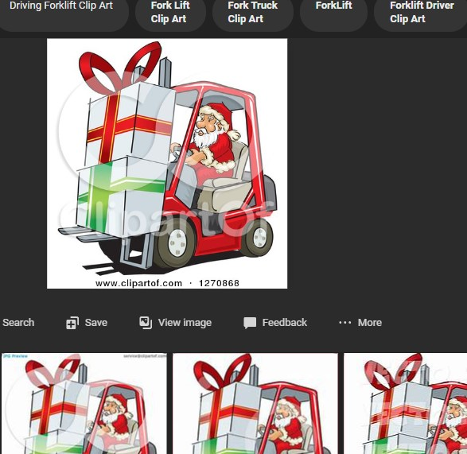

There was once a caramel colored girl who lived in a very average apartment complex in Afton, Missouri. She was in an abusive relationship, which she was about to leave."I'll never date again," she thought to herself.
The girl's life was rather bland and mundane. She worked an average warehouse job. "I'll never find a job that's fulfilling," she'd stew.
Then, one day, she noticed a pale, long-haired gentleman that peeked her curiously. This made her heart beat rapidly! She'd observe him from afar and make mental notes about him that she would put in a mental collage of sorts in a corner in the back her mind.
The two started talking and the boy would eventually reveal that he'd been taking mental notes about her, as well. And so, the boy helped the girl retrieve possessions from the abuse beast she'd been dating.
Together, the pair were vibrant and youthful. They were in love of the purest kind. So, their story begins.
The strong bond that the two shared allowed them to have numerous successes and overcame challenging obstacles. Good fortune continues to follow them.
The two moved from Affton, MO, to the nitzy suburn of Brentwood. The girl lost 20 pounds, quit smoking cigarettes. She is on the brink of potentially creating an awesome, high-powered, well-paying career for herself in tech. Her husband hopes to follow her lead. What next? We'll just have to wait to see!